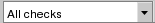

The following figure shows the option controls in the toolbar. Each control is described in Table 1.
Item |
Button |
Description |
|---|---|---|
Select Highlights and Run Options |
Displays a pulldown menu with 4 toggle options. Option states are preserved from one session to the next. Options include: “Zoom to Highlights,” “Clear Existing Highlights,” “Include Check Definition in Tooltip”, and “Run DRC on Edit.” |
|
Calibre Options |
Opens the Calibre RealTime Options Dialog Box in Pyxis Layout. Use Shift-F12 as a keyboard shortcut. |
|
Check Recipe  |
Displays a list of recipes. Built-in recipes include:
|
|
The toolbar may be relocated only to the TOP or BOTTOM of the standard toolbar locations, but never to the LEFT or RIGHT. The toolbar may not be customized. |
||